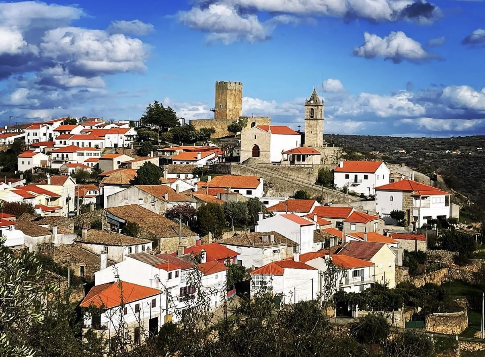
Uma Casa Portuguesa : histoire d'une chanson et de ce qu'elle dit de l'hospitalité portugaise
Écrite en 1953 et rendue célèbre par Amália Rodrigues, la chanson pose une question plus intéressante qu'il n'y paraît : qu'est-ce qu'une maison portugaise ?
Derniers articles
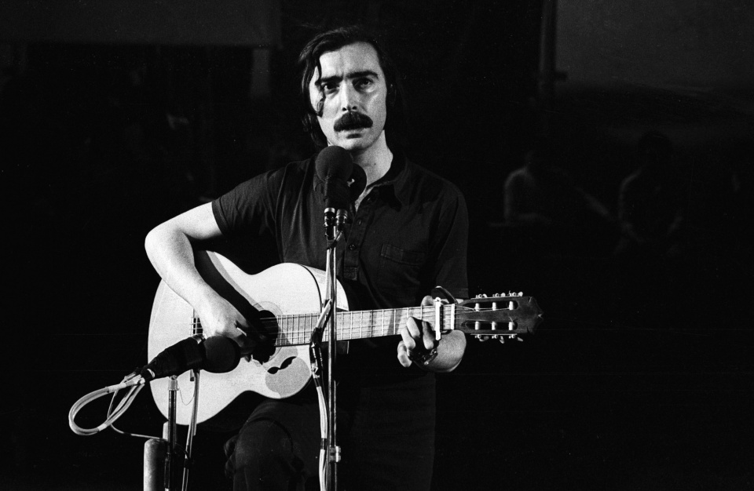
José Mário Branco, l'exilé qui a enregistré « Grândola, Vila Morena » près de Paris
Le 10 juin 1963, un étudiant de 21 ans quitte le Portugal pour Paris. Onze ans plus tard, une chanson qu'il a enregistrée au château d'Hérouville donne le signal de la révolution des Œillets.

« Viana, la légende des cœurs d'or » : le film d'animation qui raconte l'origine du cœur de Viana
Le plus cher des films portugais est un dessin animé. Il met en scène la première princesse portugaise du cinéma d'animation et raconte, à sa manière, la naissance du bijou emblématique du Minho.

José Saramago (1922-2010), du village d'Azinhaga au prix Nobel de littérature
Fils de paysans sans terre du Ribatejo, serrurier de formation, José Saramago n'a vécu de sa plume qu'après cinquante ans. En 1998, il devient le premier écrivain de langue portugaise couronné par l'Académie suédoise.
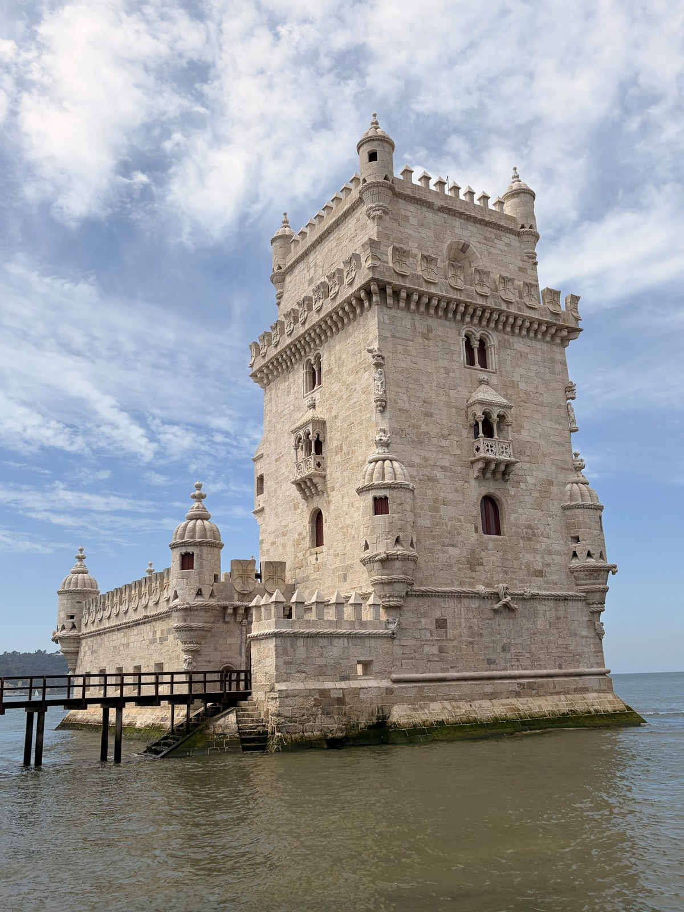
16 novembre 1972 : la Convention du patrimoine mondial et les 17 sites portugais inscrits depuis
Le 16 novembre 1972, à Paris, l'UNESCO adopte la Convention du patrimoine mondial. Le Portugal la ratifie en 1980 et compte aujourd'hui 17 sites inscrits, des Jerónimos à la vallée du Côa.

LEFFEST 2026 : Cronenberg, Lars von Trier et Tiago Guedes au festival de Lisbonne
Cronenberg président du jury, Willem Dafoe pour une cinquième venue, une rétrospective Lars von Trier presque intégrale et Tiago Guedes à l'honneur : la 20e édition du LEFFEST.

Carminho au Liceu de Barcelone et aux Latin Grammy : l'album « Eu vou morrer de amor ou resistir » sur scène
Le 9 novembre, le public du Gran Teatre del Liceu de Barcelone s'est levé à la fin du concert. Trois jours plus tard, Carminho chantait à Las Vegas devant les professionnels réunis pour les Latin Grammy Awards.
HistoireLes soldats portugais de la Lys dans la mémoire des familles : retours, disparus et lieux de mémoire
Disparus, « gaseados », restés en France : les familles des soldats portugais de 14-18 racontent.
CultureSophia de Mello Breyner Andresen, poétesse et première femme lauréate du prix Camões
Née le 6 novembre 1919 à Porto, Sophia de Mello Breyner Andresen est l'une des grandes voix de la littérature portugaise du XXe siècle : poétesse de la mer et de la lumière, autrice de contes devenus des classiques, opposante à la dictature.
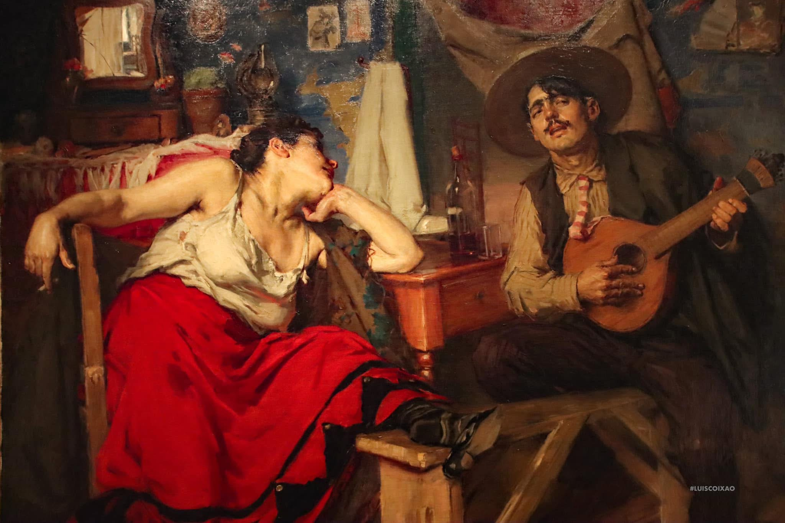
José Malhoa, peintre du Portugal populaire : vie, œuvres majeures et musées
Paysans, buveurs, fadistes : José Malhoa a fait entrer le peuple portugais dans la grande peinture. Vie, œuvres majeures et musées où le voir.
Toutes nos lectures
Amadeo de Souza-Cardoso, pionnier du modernisme portugais

Il y a 130 ans naissait Leitão de Barros, pionnier du cinéma portugais
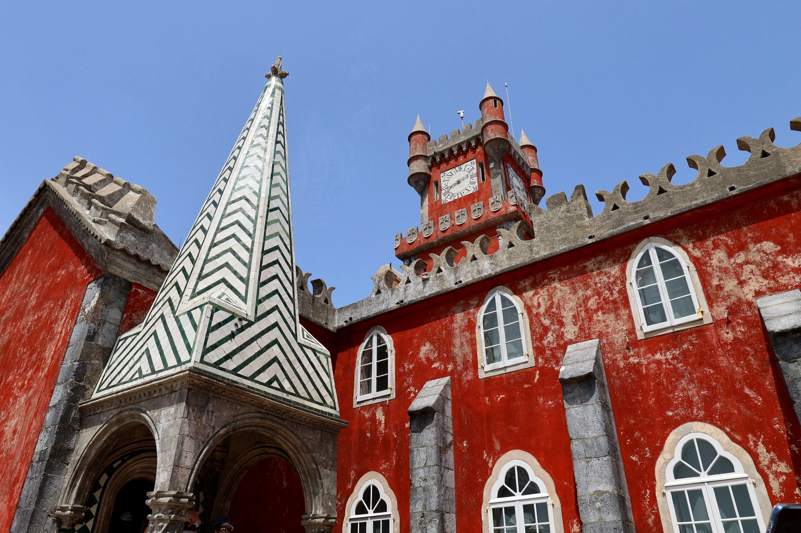
Le palais de Pena, le château romantique de Ferdinand II à Sintra
Le Portugal dans la Grande Guerre : les oubliés de la Lys
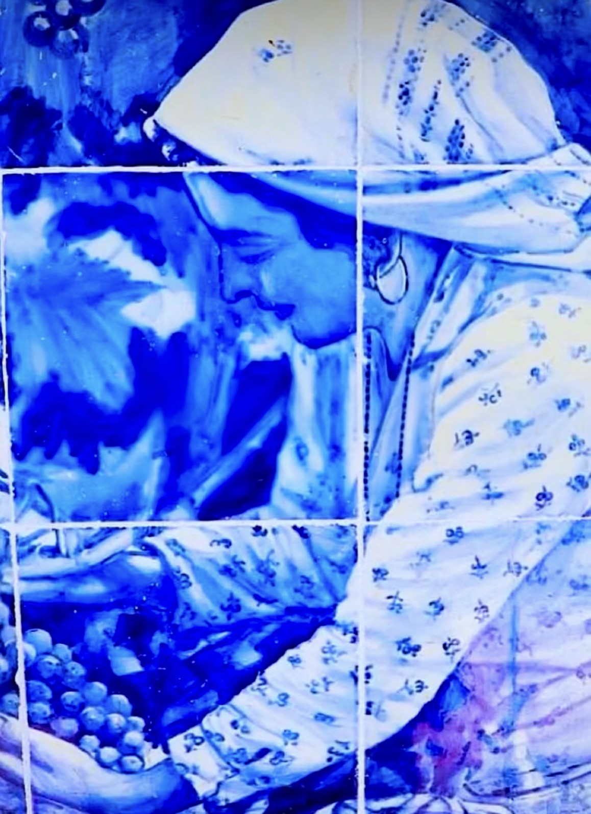
Les azulejos du Portugal : histoire et lieux où les admirer

« A Flor do Recomeço » : Salvador Sobral chante onze inédits de compositeurs brésiliens

Agustina Bessa-Luís (1922-2019), romancière de « La Sibylle » et figure majeure des lettres portugaises
António Soares dos Reis, le sculpteur de « L'Exilé »
Calçada portuguesa : au Portugal, l’art se trouve aussi sous nos pieds

L'art manuélin
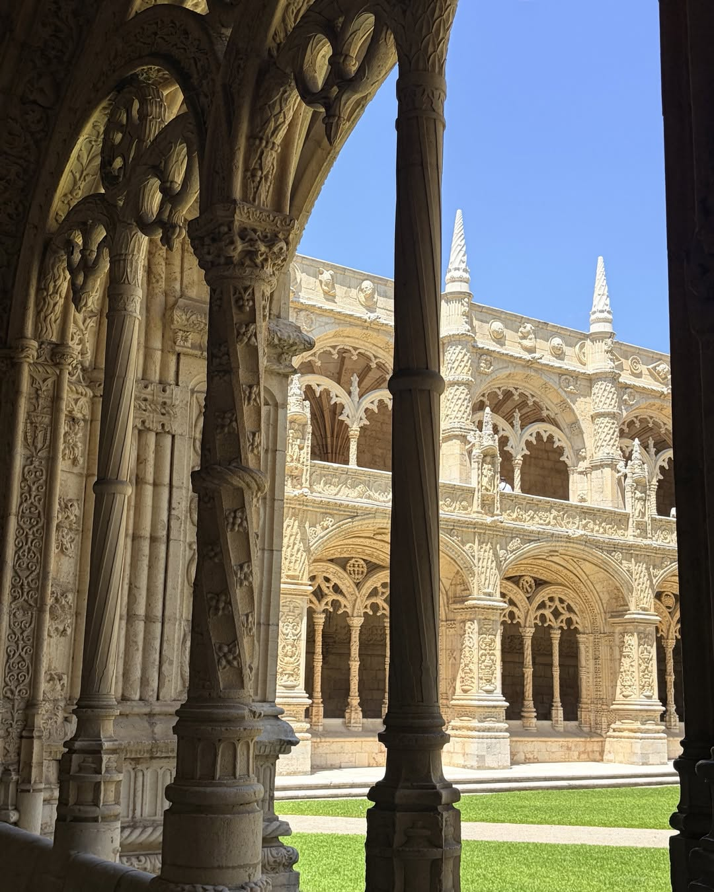
Le cloître des Jerónimos, chef-d'œuvre du style manuélin à Lisbonne

Accents du Portugal : du Minho aux Açores, ce qui distingue les parlers régionaux
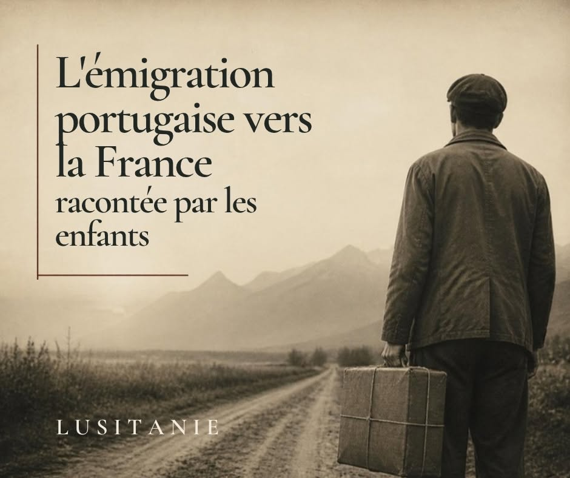
L'émigration portugaise vers la France racontée par les enfants
Portugais et lusodescendants dans la fiction française : du regard extérieur au récit de l'intérieur
5 octobre 1910 : la proclamation de la République portugaise
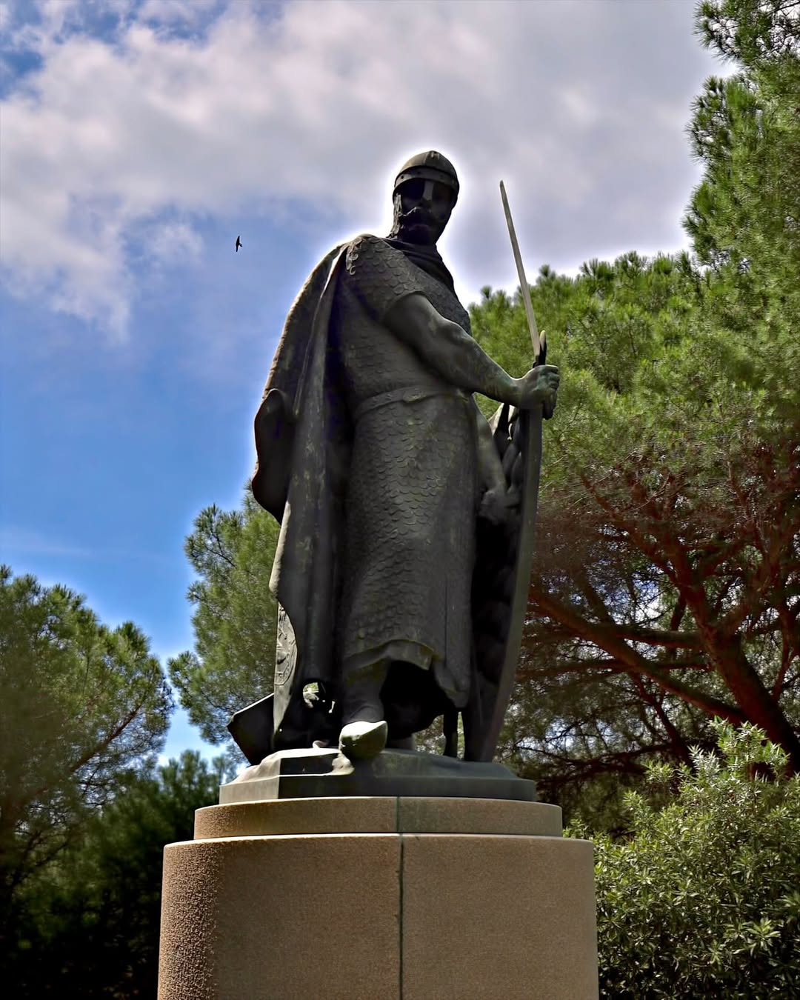
Le traité de Zamora, 5 octobre 1143
Batalha : les Chapelles inachevées enfin restaurées
Gonçalves, João, Magalhães : les noms portugais écorchés en France
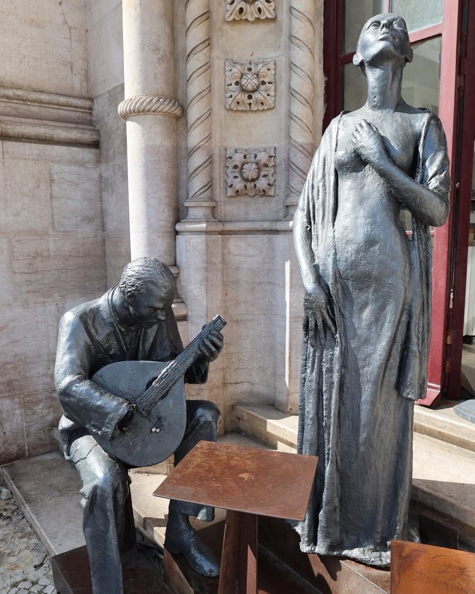
Le fado, l'âme d'un peuple
Un morceau de France au cœur de Lisbonne
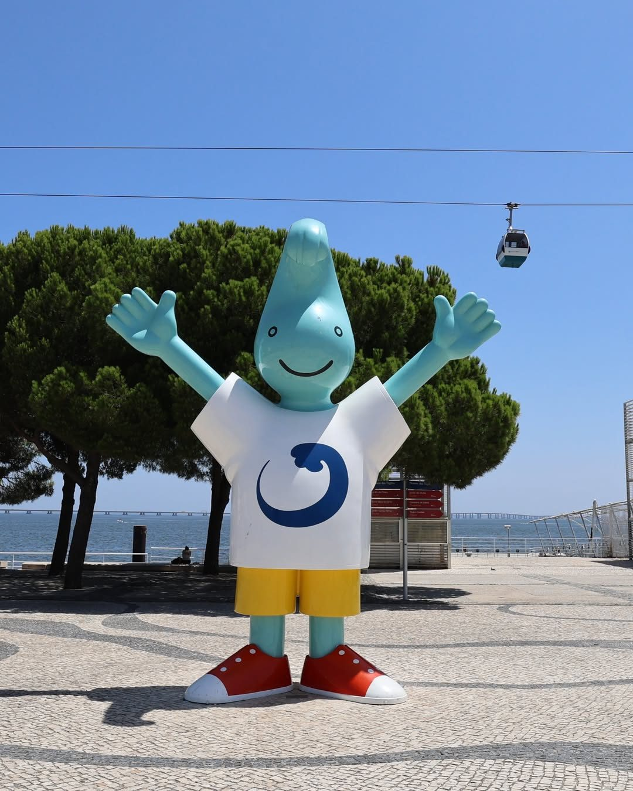
Gil, la mascotte de l'Expo 98, veille toujours sur le Parque das Nações
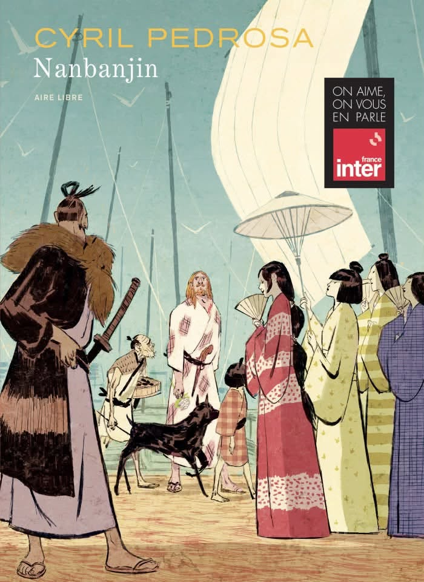
Nanbanjin : Cyril Pedrosa et Taiyō Matsumoto racontent la rencontre du Portugal et du Japon
La cartographie des Portugais de France
Little Portugal, USA : l'Ironbound de Newark
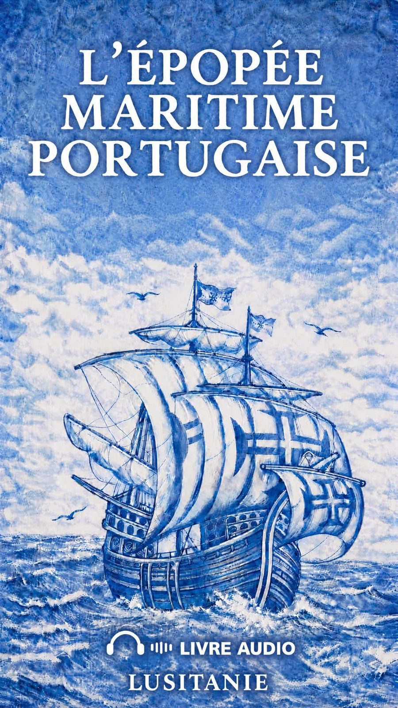
L’épopée maritime portugaise
Le pont du 25 avril fête ses 60 ans
L'immigration portugaise en France
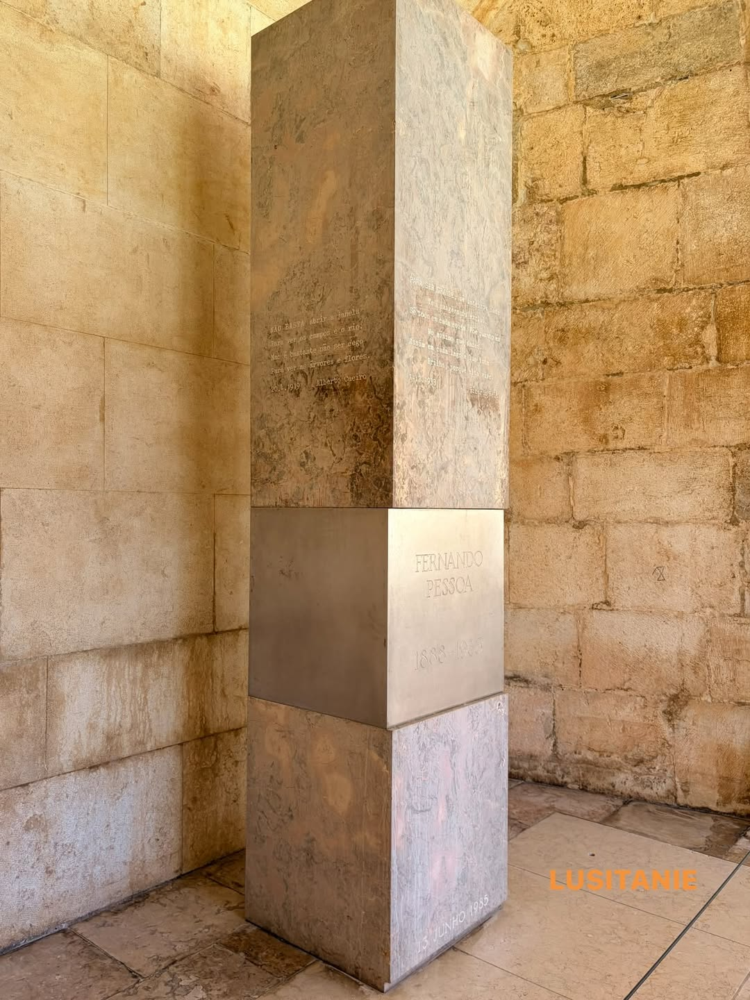
Le tombeau de Fernando Pessoa au Mosteiro dos Jerónimos
Fado Português : le poème de José Régio chanté par Amália Rodrigues

Boca do Inferno — la bouche de tous les mystères

Saudade du futur

Dom Duarte — le roi philosophe et les prémisses de la saudade

La Tour de Belém — le joyau retrouvé

Un pays de poètes

Mon pays, c'est la saudade

Lisbonne, je t'ai tant aimée

Quinta da Regaleira — le labyrinthe des symboles

Sintra — l'Eden glorieux

Aquí — le Portugal à Cannes

Camões — une vie de roman, une épopée immortelle

Lisbonne sous les jacarandas en fleur

Deux jours à Lisbonne

Le don d'ubiquité

Mémoire d'exils — ce qui reste quand on part

Les mystères du fado

Fernando Pessoa — l'homme aux mille visages

O Emigrante — l'hymne d'une génération